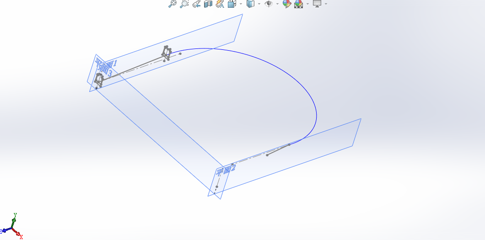
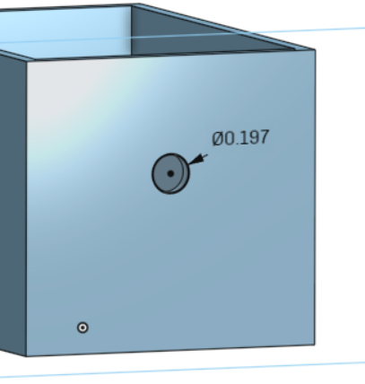

零組件尺寸分析
手足球系統的零組件尺寸分析 (可行性分析)
1.手足球場地(長:57.4in 寬:30in 總高:10.7in)


原先球門牆壁厚度為0.7in

後來在模擬時發現球門前的球員動作距離有限,球容易卡在死角,最後決定將球門牆壁加厚
球門尺寸


球員總高4.3in以及跟竿子結合的洞(直徑)為0.562in

竿子直徑為0.562in
原本的竿子有給限制頭尾，但後來發現在模擬時會有一些小問題，所以決定去除


〈軌道詳細設計〉
設計初步草圖

寬度設計1.5因需比球體半徑大一些

螺旋線高度為4，為緩衝設計加大

中間段使用掃略出圖形
完成軌道及線架構

〈集球門〉第三版
初步草圖 進球口


出球口

做這個斜坡是因為怕球撞到通道會反彈而不會滾去擊球裝置的位置，也可以讓球被擊出後能順利的進入軌道

延伸的通道是為了擊球裝置的最大伸長路徑

〈擊球系統〉
長為2.362英吋，寬為1.575英吋，向上伸長0.5英吋
邊框向內偏移0.079英吋，向上伸長1英吋

為擊球桿開孔


1.3x1.3的擊球面，伸長0.079英吋

在尾端畫一個阻擋物以防擊球桿整支飛出去


〈組合圖〉
這是最一開始的初步組合圖，
場地四周內側設計有圓角、場地上有突出障礙物以及回球機構
設計理念:
1.圓角:以防球模擬時跑到角落就不會動了
2.障礙物:多點障礙物，增加遊戲難度
3.回球機構:任何一方得分後，球會自動回到場上

但由於我們在模擬及簡化時都有問題
於是有了想的場地以及新的構想
我們去除掉了圓角以及障礙物(因為根本不必要)
而回球機構我們設計了一個擊球系統
擊球系統:任何一方得分後，球進入軌道，會由擊球機構把球擊出並沿著軌道回到被得分那一方上

細部設計與 BOM << Previous Next >> 如何開始編輯報告書